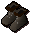
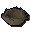
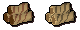

")
Woodcutting - Extra Features
Introduction | Summoning Familiars | Lumberjack Clothes | Bird's Nests | Tai Bwo Wannai Clean-Up
Teak and Mahogany Special Logs | Arctic Pine | Canoes | Sawmill Jobs | Locators
Random Events | Training Hints and Tips | Dungeoneering | Quests
Teak and Mahogany Special Logs | Arctic Pine | Canoes | Sawmill Jobs | Locators
Random Events | Training Hints and Tips | Dungeoneering | Quests
Introduction
For those who hope to make it as a master woodcutter, the various locations of the more valuable wood become extremely important. Familiarising oneself with these places is vital when it comes to being able to supply wood to an established customer base, or when attempting to swiftly advance in this skill.
Some areas are more heavily used than others, so you will need to find which locations are best for you at your present skill level and stock requirements.
Summoning Familiars
Using the Summoning skill, you'll find that there are a few familiars that might be useful for training your Woodcutting. Of particular note is the beaver, who boosts your Woodcutting level.
Lumberjack Clothes
While escorting adventurers from Paterdomus to Burgh de Rott, or refugees from Burgh de Rott to Paterdomus in Temple Trekking / Burgh de Rott Ramble, you may find some lumberjack clothes dropped by the dire undead lumberjacks of Mort Myre. You will need a Woodcutting level of 44 to wear lumberjack clothes.
![[image]](../../img/main/kbase/items/clothing/lumberjack_hat.gif) |
![[image]](../../img/main/kbase/items/clothing/lumberjack_legs.gif) |
 |
Each of these items of clothing provides a slight experience boost when Woodcutting, with an extra bonus for wearing all of them together. Note that lumberjack clothes are untradeable.
Bird's Nests
 While cutting down trees, you may come across a bird's nest. If you pick up the nest and search it (in your inventory) you may find a piece of jewellery or other useful items inside.
 It is possible to increase your chance of receiving bird's nests by wearing a rabbit-foot necklace. These items can be acquired by hunting a rabbit (see the Hunter - Rabbit Snaring page for more information) to receive a rabbit foot, and then stringing it with a ball of wool (requiring a Crafting level of 37) to make the rabbit-foot necklace.
It is possible to increase your chance of receiving bird's nests by wearing a rabbit-foot necklace. These items can be acquired by hunting a rabbit (see the Hunter - Rabbit Snaring page for more information) to receive a rabbit foot, and then stringing it with a ball of wool (requiring a Crafting level of 37) to make the rabbit-foot necklace.
Tai Bwo Wannai Clean-Up
 The Tai Bwo Wannai Clean-Up will teach you that you can do other tasks with the Woodcutting skill. By using machetes to remove the light, medium and dense jungle you learn a new way to increase your Woodcutting skill.
The Tai Bwo Wannai Clean-Up will teach you that you can do other tasks with the Woodcutting skill. By using machetes to remove the light, medium and dense jungle you learn a new way to increase your Woodcutting skill.
Also, the trading sticks you earn from the villagers of Tai Bwo Wannai can be used to purchase access to a special tree enclosure where you will find mahogany and teak trees to chop down using normal hatchets.
Teak and Mahogany Special Logs
 There is a small chance that, while you are woodcutting at a teak or mahogany tree, you will receive a 'special log'. These logs have patterns ingrained into them, and are considered valuable by the Sawmill Operator of Varrock.
If you are lucky enough to get your hands on a patterned special log, you have one of two options. You can:
- Sell them to the Sawmill Operator, north-east of Varrock
- Exchange two special logs for a completely free conversion of all logs in your inventory into planks
Arctic Pine
 The arctic pine spots north of Neitiznot are a useful area to gain not one, but two batches of Woodcutting experience for each log you cut. Once you have cut some arctic pine logs, take them to the stumps littered around the area and split them for a second lot of XP.
The arctic pine spots north of Neitiznot are a useful area to gain not one, but two batches of Woodcutting experience for each log you cut. Once you have cut some arctic pine logs, take them to the stumps littered around the area and split them for a second lot of XP. Deposit points are located at the end of most bridges north of Neitiznot for quickly disposing of your split wood.
Canoes
With your Woodcutting skill, you can make canoes to travel up and down the River Lum.
The type of canoe you can build is based upon your Woodcutting level:
| Canoe Type | Level Required | Experience |
| Log | 12 |
30 |
| Dugout | 27 |
60 |
| Stable dugout | 42 |
90 |
| Waka | 57 |
150 |
For more information on canoes, please view Transportation - By Water.
Sawmill Jobs

The overseer will direct you to the noticeboard, where you can choose from quick jobs and large jobs. As these imply, the large jobs will take a greater amount of time to complete but with a more impressive Woodcutting xp reward, while the quick jobs take a fraction of the time for a fraction of the xp. Once you have accepted a job by clicking the 'Accept' button, you are ready to start completing the order.
Your first task is to fill your inventory with logs from the stacks of logs to the north-west of the room. These are free to be used in the Sawmill but cannot be taken outside. You then take these logs to the conveyor belt hopper to the east, where they roll out on to the conveyor belt and get split by a spinning blade, falling into the plank stack at the end. As with the logs, these cannot be taken out of the Sawmill.
Fill your inventory with these planks, as they need to be converted into cut planks for your order. If you want to know how many cut planks of each specific type that you need, check the table in the top-left of your game screen. To cut your planks, click on the workbenches to the south of the room with a saw in your inventory. You may get a saw for free from the first room that you entered, or you can use a crystal saw to cut the planks slightly faster. Once you have clicked on the workbench, a small screen will open, offering four different types of cut:
| Cut | Plank Types Produced | Difficulty | Woodcutting Experience |
| Straight cut | 1x Short plank 1x Long plank |
Simple | 15 |
| Diagonal cut | 2x Diagonal-cut plank | Medium | 18 |
| Tooth & groove cut | 1x Tooth-cut plank 1x Groove-cut plank |
Very hard | 25 |
| Curve cut | 1x Curved plank | Hard | 22 |
You will gain a small amount of experience for each completed plank, but the greater chunk of xp is saved for a finished order. You can tell if your order is finished by looking at the top-left of your game screen. Completed orders can then by given to the overseer by right-clicking on her and selecting 'Finish job'.
Any excess cut logs can be regained from the wagon on the south side of the room, so you have a headstart on whatever order you choose to take on next!
Locators
 To get to your Woodcutting areas quicker, you might want to consider purchasing a locator. These can be bought using reward credits in Mobilising Armies. Each officer of the officer tower can offer you a different level of locator.
To get to your Woodcutting areas quicker, you might want to consider purchasing a locator. These can be bought using reward credits in Mobilising Armies. Each officer of the officer tower can offer you a different level of locator.
By using the locator, you can choose to be teleported to a Mining, Woodcutting, Fishing or Herblore secondary ingredient area. Once you have made your choice, the locator will make some mysterious calculations and then teleport you randomly to a suitable spot. Try not to be wasteful: the locators have a limited number of charges and can only be refreshed by buying another or playing a game of Mobilising Armies.
Random Events
For a list of random events that can occur while Woodcutting, please refer to the Random Events section in the Manual.
Training Hints and Tips
- Use the best hatchet that you can.
- Try to find a good Woodcutting location close to a bank, to save travelling time.
Woodcutting Training in Dungeoneering
It is possible to train all of your skills while dungeoneering, and Woodcutting is no exception. Trees grow through the walls of Daemonheim, and can be cut down using a hatchet. You can also gain Woodcutting experience by completing woodcutting skill doors.
- To find out more about skill doors and the basics of dungeoneering, please click here
- To find out about woodcutting trees in Daemonheim, click here
- To find tables with Woodcutting requirements and XP levels, click here
Quests Giving Woodcutting Experience
To view quests that reward you with Woodcutting experience, please see the Woodcutting Rewards page.
Although Woodcutting is not a members' skill, some of the objects that need to be cut down are members' objects. There are no quests required to use this skill, but to hack away at the light, medium and dense jungle growing in Tai Bwo Wannai Village you need to have permission from the villagers in the Tai Bwo Wannai Cleanup and have completed Jungle Potion.
Click here to view the Woodcutting FAQs

More articles in
Woodcutting
|
|
|
Further Help
If this article does not help you, you may find the following sections of the RuneScape site helpful:
|
|